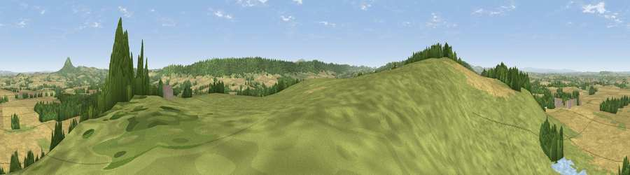

Viewpoint near Harley
#5448 in England · top 18% of its area beats it · near HarleyWhere it is
The exact computed spot (SJ 57475 01525). Click the marker for map links.
The view, rendered

A 360° render of this exact spot computed from the terrain model, tree cover and land cover — summer colours, afternoon light, calibrated against photographs of famous viewpoints. Real trees, hedges and buildings will differ in detail.
The panorama
Grey silhouette: terrain skyline in each direction (720 bearings, Earth curvature and refraction included). Dashed green: skyline with trees (+15 m) and buildings (+8 m) as obstacles. Blue strip: how far the ground is visible on each bearing.
Where the view opens
Wedge length = distance to the farthest visible ground on that bearing (vegetation-aware). Rings at 10, 25 and 50 km.
What fills the view
51% grassland · 33% cropland · 13% woodland · 2% water
Angular shares of the visible panorama (visual magnitude), not map area. Landscape diversity 0.47 (0–1 Shannon).
Key numbers
More beautiful places nearby
The staircase of upgrades: each row has a higher view potential than everything closer. Driving times are estimates from straight-line distance, calibrated against real road routing — check an actual route before setting out.
| Place | Direction | Drive | Score |
|---|---|---|---|
| Viewpoint near Coundmoor | WSW · 1 km | ~2 min | 76.3 |
| Viewpoint near Harley | ESE · 3 km | ~8 min | 79.9 |
| Viewpoint near Little Wenlock | NE · 8 km | ~16 min | 86.6 |
| North Hill | SSE · 58 km | ~81 min | 86.8 |
| Worcestershire Beacon | SSE · 60 km | ~82 min | 87.1 |
| Viewpoint near West Quantoxhead | SSW · 165 km | ~187 min | 87.9 |
| Viewpoint near West Quantoxhead | SSW · 166 km | ~188 min | 88.7 |
| Holdstone Hill | SSW · 181 km | ~201 min | 90.2 |
52.60983, -2.62943 · source: screening · position refined by local search. Computed location — check access rights before visiting.